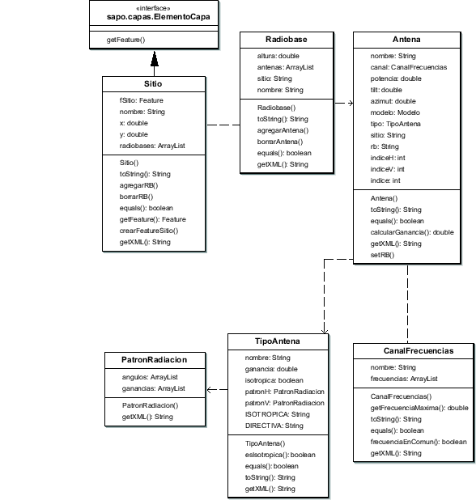

Siguiente: El paquete predicciones
Subir: Arquitectura de paquetes
Anterior: El paquete vectorial
Índice General
Para la representación de la red celular se dividió el problema en
tres niveles de abstracción: el sitio, la radiobase y la antena, de
forma de lograr la mayor flexibilidad posible.
Como se explicó en 7.3 cada antena está asociada con
un tipo de antena, un modelo de propagación y un canal de
frecuencias. En la arquitectura de clases esto se refleja en que la
clase Antena tiene referencias a instancias de las clases que
representan dichos elementos (TipoAntena, Modelo y
CanalFrecuencias). En la figura 8.7 puede verse un
diagrama con las clases de este paquete, en donde aparecen los
atributos y métodos más importantes.
Figura 8.7:
Diagrama parcial de clases del paquete red
|

|
SAPO